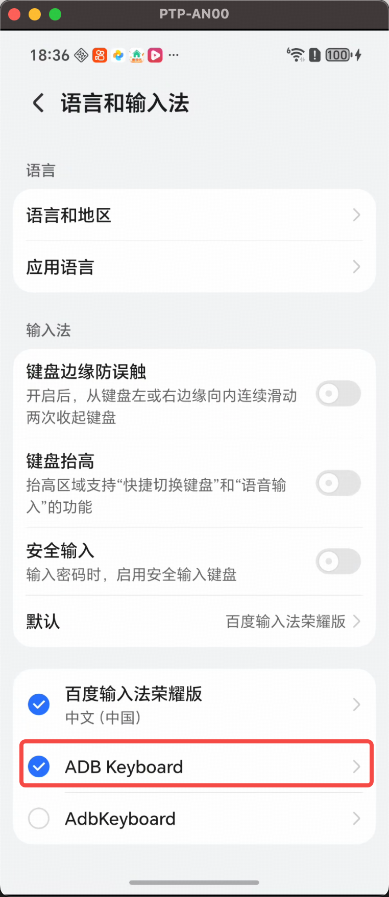
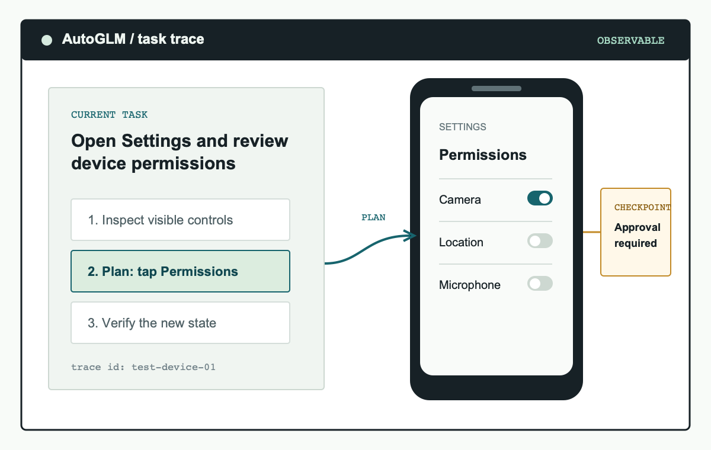

AutoGLM 深度盘点：让大模型直接操控手机的 GUI Agent 技术栈能做什么
从框架设计到设备适配、从模型部署到强化学习进化，系统性扫描 AutoGLM 的能力面、落地门槛和适用场景。
把手机截图丢给大模型，让它看明白屏幕上有什么、想清楚下一步该点哪里、然后通过 ADB 直接执行——这套听起来像科幻的工作流，在智谱 AI 和清华团队 2024 年底发布的 AutoGLM 框架里已经变成了开源可用的工程形态，它的官网上有项目主页、论文汇总和 Demo 视频。本文从框架设计、模型能力、设备适配、生态覆盖四个维度做一次完整盘点，顺带聊聊它的落地门槛和谁值得真正用起来。
一、框架设计：为什么它敢叫 Autonomous Foundation Agent
AutoGLM 的开山论文里有两个被反复引用的洞察，也是这套框架区别于早期 GUI Agent 尝试的核心差异。第一个是中间接口解耦：规划层（决定"要做什么"，允许试错恢复）和执行层（精确执行动作 JSON）是分开的，分别优化。这样模型可以先产出一个结构化的 Tap/Swipe/Type 动作，再由 Phone Agent 框架翻译成 ADB 或 HDC 命令执行，而不是让模型直接吐一段伪代码去解析。第二个是在线课程强化学习：论文作者指出，离线训练的模型只见过数据集里的有限样本，碰到真实 App 的无限变化就会卡住——必须让 Agent 在线试错、从执行结果里反哺模型更新。
这个设计哲学在后来的 MobileRL、ComputerRL、AgentRL 三篇论文里被依次扩展：MobileRL 针对手机端在线训练，ComputerRL 覆盖电脑端到端 RL，AgentRL 则试图把多轮多任务的通用训练也纳入。目前公开评测的数据是：在 AndroidLab VAB-Mobile 上成功率 36.2%，中文主流 App 场景能到 89.7%，OpenTable 餐厅预订这种任务甚至有 96.2%。这些数字直观反映了框架设计的有效性——特别是中文场景的高成功率，和中文版模型的针对性训练直接相关。
二、模型层：AutoGLM-Phone-9B 的部署选择
整套框架的"大脑"是一个 9B 参数的视觉语言模型，基于 GLM-4.1V-9B-Thinking 改造。它不是通用对话模型，输入固定是截图加自然语言任务，输出固定是结构化动作 JSON。框架本身的安装包从下载拿，Python 项目，pip install 或者 git clone 都行。两个版本并行：中文版覆盖美团、淘宝、小红书这类主流 App，多语言版面向 Gmail、X、Google Maps 等英文场景。
部署门槛是个绕不开的话题。FP16 精度下模型要吃 18GB 显存，加上 vLLM 框架本身的开销，实际建议 24GB 显存起步（RTX 4090、A5000、A6000 这个档位）。量化能降不少：Q8_0 约 10GB（RTX 3060 12GB 刚好能跑），Q5_K_M 压到 6.5GB（RTX 3050 8GB），Q4_K_M 甚至 5.5GB（RTX 2060 6GB）。显存实在不够也不用硬扛——智谱 BigModel 和 ModelScope 都托管了这个模型，API 调用模式下零 GPU 即可体验。
部署引擎支持 vLLM 和 SGLang 两条路线，官方给出的 API 参数有一套严格推荐值：上下文长度 25480、每 prompt 最多 10 张图片、图片处理分辨率 max_pixels 5000000、视觉编码器开数据并行。这些数值不是随便拍的，模型部署脚本 check_deployment_cn.py 专门就是用来验这个的——部署不当会导致思维链变短或乱码，直接影响 Agent 的行动质量。AutoGLM文档里还有更详细的部署校验脚本和参数调优指南。
三、设备适配：ADB 与 HDC 双轨并行
AutoGLM 的设备连接层是框架里最容易被忽略但对落地影响最大的部分。它同时支持 Android 的 ADB 和 HarmonyOS NEXT 的 HDC 两种调试协议，代码层面自动判断当前连接的设备类型。
Android 侧的 ADB 无线调试值得单独提一句。绝大多数人以为无线配置需要 Android 11+ 的"无线调试"系统设置，其实 adb tcpip 5555 + adb connect 手机IP:5555 这条命令链在 Android 7.0+ 上就能跑通，第一次插 USB 线做完 TCP/IP 模式切换后，后面就可以彻底摆脱数据线——同一个 WiFi 下任意电脑都能连。多设备场景下通过 --device-id 指定 IP:端口，Agent 框架会自动路由截图和执行命令。
鸿蒙侧的 HDC 适配是 AutoGLM 相对完整的一块。HDC 工具包在 HarmonyOS SDK 的 toolchains 目录里，配置 PATH 之后基本和 ADB 的使用套路一致（hdc list targets 代替 adb devices）。鸿蒙原生支持中文输入，不需要额外装 ADB Keyboard 这类 App，这一点比 Android 侧省心。目前已验证覆盖的鸿蒙应用有 60+，包括微信、QQ、飞书、淘宝、京东、美团、12306、高德、bilibili、抖音、小红书、知乎、WPS、豆包等主流应用。

四、生态覆盖：50+ Android App 与 60+ 鸿蒙应用的实际支持
框架已经跑通的应用清单比论文数字更能说明问题。Android 侧覆盖了美团、淘宝、京东、支付宝、微信、QQ、小红书、抖音、B 站、高德、知乎、12306、去哪儿、闲鱼、拼多多、微博、飞书、钉钉、QQ 音乐、网易云音乐、WPS、豆包、百度网盘等 50+ 款；鸿蒙侧在此基础上增加了一批华为服务和原生应用，总量到 60+。框架还提供了 --list-apps 参数直接列出设备上可操作的应用清单，方便事前验证。
值得注意的是，应用支持不是静态列表——新 App 的适配主要取决于模型的视觉理解能力和动作输出精度，大部分情况下不需要改框架代码，只需要在 Agent 运行时通过自然语言任务描述告诉模型要做什么。这也是"Foundation Agent"定位的实际含义：框架本身不锁死场景，扩展成本相对低。

短板也要说
盘点了一圈能力面，也得客观聊聊它的局限。
硬件门槛：FP16 部署真要 24GB 显存，即使量化到 Q8_0 也要 12GB。云端 API 能绕过这个问题，但长期高频调用的成本会慢慢累加。对于只是想"玩玩看"的用户来说，租按量 GPU 实例可能比自己攒机器更划算。
前置依赖：无论是 ADB 还是 HDC，都需要先在手机上开 USB 调试、装调试工具、配 PATH，第一次上手需要花半天到一天走完整个环境配置。无线调试虽然能省数据线，但 WiFi 信号不稳定时连接经常断，部分 Android 设备重启后 TCP/IP 模式会关闭，需要重新插 USB 线。
适用场景边界：框架在"中文主流 App"场景表现好，换成 Gmail、X、Google Maps 这类英文 App 就得切多语言版模型，效果数据也没有中文版那么漂亮。而且应用本身的 UI 变动会直接影响 Agent 的成功率——电商 App 改版了，模型可能就要重新适配。
谁该用 AutoGLM
三类人值得认真投入：
第一类是 AI 研究者和学生。四篇核心论文有明确的 arXiv 编号和 BibTeX 格式，开源框架（Open-AutoGLM）代码可跑，本地可以做基础框架复现，有算力的可以尝试 MobileRL 那种在线强化学习实验。这一条是入门 GUI Agent 领域最实在的路径之一。
第二类是有批量手机操作需求的开发者。比如运营同学需要定期在多个 App 上做重复性的点击填写操作、测试同学想把 UI 自动化从"固定路径录脚本"升级到"自然语言描述任务"、或者个人研究者想做 App 数据采集——AutoGLM 的自然语言驱动 + 截图理解 + 结构化动作输出这套组合，比传统的 UIAutomator2/ATX 更灵活，不需要针对每个 App 写定位器脚本。
第三类是对多模态 Agent 方向有产品思考的人。AutoGLM 提供了一个相对完整的"模型 + 框架 + 设备连接 + 强化学习迭代"的技术样本，可以直接作为原型验证的底座，不需要自己从 0 到 1 搭 GUI Agent 流水线。
模型权重是 MIT License、代码是 Apache-2.0 License，开源友好。国内开发者如果担心 GitHub 访问速度，可以分别在 GitHub、Gitee、GitCode 三个镜像仓库里找到同样的资料。